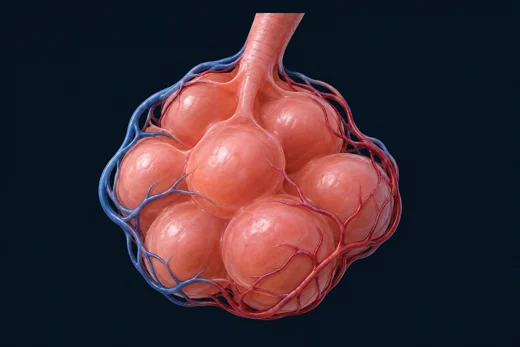

ونتیلاتور آموزشی
قلب و ریه
دمشدت بر حسب امتیاز آموزشی است.
- مقاومت اضافهٔ دم
- —
- مقاومت اضافهٔ بازدم
- —
مقایسهٔ مدها در تنگی لوله
در کیس پایه و با سایر تنظیمات ثابت، لولهٔ باز را با تنگی نسبی در VC و PC مقایسه کن.
در VC فاصلهٔ Ppeak تا Pplat بیشتر میشود و حجم هدف در مدل حفظ میشود. در PC، با فشار و زمان دم ثابت، حجم جاری میتواند افت کند.
در هر دو مد، دنبالهٔ جریان بازدم و Auto-PEEP را بررسی کن. این تمرین انسداد نسبی را تقریب میزند. تشخیص علت به ارزیابی بالینی نیاز دارد.
منابع انسداد لوله
شدت، درصد انسداد واقعی را نشان نمیدهد. در انسداد کامل، جریان و حجم تحویلی صفرند. فشار سمت دستگاه به سقف فشار و پاسخ دستگاه وابسته است و در این حالت برآورد نمیشود.
تبادل گاز و اسید–باز
گاز خون شریانی در حالت پایدار مدل
قلب و ریه
حرکت شماتیک اندامها در هر چرخه
اسلایدر HR در مانیتور، سرعت تپش تصویر را تغییر میدهد. برونده قلبی از شرایط کیس محاسبه میشود.

آلوئول و مویرگ ریوی
- تهویهٔ آلوئولی
- —
- فشار اکسیژن آلوئولی
- —
- سهم شانت در مدل
- —
اکسیژن از آلوئول به خون میرود و دیاکسیدکربن از خون به آلوئول برمیگردد.
بافر بیکربنات
با بیکربنات ثابت، افزایش PaCO₂ موجب کاهش pH میشود.